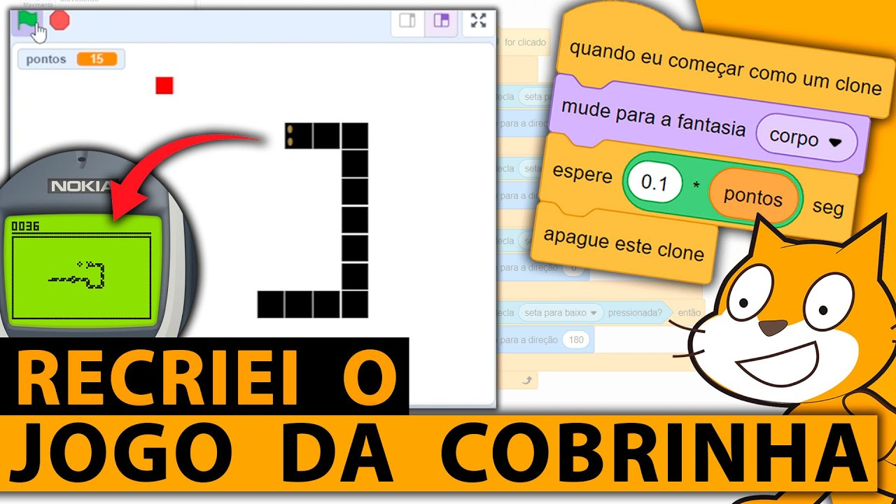
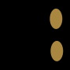

O Jogo da Cobrinha no Scratch
O que o vídeo ensina e um passo a passo para recriar o clássico jogo da cobrinha, bloco por bloco.
“recriando o jogo da cobrinha no Scratch em 1 único vídeo”
Tutorial completo do canal Códigos Lucas Leal, que mostra como recriar o jogo da cobrinha (aquele que ficou famoso nos celulares antigos) usando só o Scratch, do zero até o jogo funcionando.

Um clássico com quase 50 anos
A ideia é simples e viciante: guiar uma cobra que cresce a cada comida, sem bater em si mesma nem nas paredes. É simples de entender e difícil de dominar, e por isso é um ótimo primeiro projeto de programação.
Blockade: o fliperama que deu origem à mecânica da “cobra” que deixa um rastro.
Snake chega aos celulares Nokia e vira febre mundial.
Slither.io leva a ideia para o multijogador online.
Nós recriamos o jogo no Scratch, com blocos e sem digitar código.
As regras do jogo
Setas do teclado
Mudam a direção da cobra: cima, baixo, esquerda e direita.
Comer a comida
Cada comida vale +1 ponto e a cobra fica 1 bloco maior.
Não pode bater
Encostar na parede ou no próprio corpo mostra “FIM DE JOGO”.
Objetivo
Fazer o máximo de pontos possível.
Cada seta corresponde a uma direção do Scratch.
Conceitos de programação que o jogo usa
Eventos
Os scripts começam com “quando a bandeira for clicada”.
Laços de repetição
O bloco “sempre” faz a cobra andar e verificar colisões o tempo todo.
Condicionais
“se … então” decide o que fazer quando uma tecla é pressionada ou algo é tocado.
Sensores
Detectam teclas, cores e outros atores.
Variáveis
pontos guarda a pontuação e também define o tamanho da cobra.
Clones
Cada pedaço do corpo é um clone temporário. É o truque principal do jogo.
O que tem dentro do projeto
Cenários
- jogo: fundo branco
- fim: texto “FIM DE JOGO”
- Variável global pontos

cobra
- Fantasias rosto e corpo
- 4 scripts: andar, controlar, clonar, perder
- Tamanho 30%
comida
- Quadrado vermelho
- 1 script: zerar pontos, sortear lugar, ser comida
- Tamanho 20%
O corpo é um rastro de clones
- 1A cada 0,1 s a cabeça deixa um clone de si mesma onde está e anda 28 passos.
- 2O clone vira um quadrado preto (corpo) e fica parado.
- 3Ele espera 0,1 × pontos segundos e se apaga.
- =Resultado: sempre existem “pontos” pedaços de corpo. Quanto mais pontos, maior a cobra! 🐍
Arraste para mudar pontos e veja a cobra crescer. Os números mostram quanto tempo falta para cada clone sumir.
Mão na massa: recriando o jogo
São 8 passos, na mesma ordem do vídeo. Os blocos aparecem exatamente como no projeto original.
Preparando o ambiente
Acesse
Entre em scratch.mit.edu e faça login (para salvar o projeto).
Crie
Clique em Criar para abrir um projeto novo.
Limpe
Apague o ator do gato, que não vamos usar.
Nomeie
Dê um nome ao projeto, por exemplo Jogo da cobrinha.
Desenhando fantasias e cenários
cobra · rosto
cobra · corpo
comida
palco · jogo
palco · fim
Criando a variável pontos
- 1Abra a categoria Variáveis e clique em Criar uma Variável.
- 2Dê o nome
pontos. - 3Escolha “Para todos os atores”, porque a comida muda o valor e a cobra lê o valor.
- 4Deixe a caixinha marcada para mostrar o placar no palco.
Uma variável, duas funções
A variável pontos é usada de dois jeitos:
mostra quantas comidas a cobra comeu.
define quanto tempo cada pedaço do corpo fica na tela.
minha variável. Ela não é usada e pode ser apagada.Fazendo a cobra andar
ator: cobraquando @greenFlag for clicado mude para a fantasia [rosto v] mude para o cenário [jogo v] vá para x: (-160) y: (3) aponte para a direção (90) sempre crie clone de (mim mesmo v) mova (28) passos espere (0.1) seg end
- 🎭Reinicia o visual: cabeça com rosto e cenário “jogo”, apagando o “FIM DE JOGO” da partida anterior.
- 📍Posição inicial à esquerda (-160, 3), virada para a direita (90°).
- 🔁Laço do jogo: deixa um clone, anda 28 passos e espera 0,1 s. É o “relógio” do jogo.
Controlando com as setas
ator: cobraquando @greenFlag for clicado
sempre
se <tecla (seta para direita v) pressionada?> então
aponte para a direção (90)
end
se <tecla (seta para esquerda v) pressionada?> então
aponte para a direção (-90)
end
se <tecla (seta para cima v) pressionada?> então
aponte para a direção (0)
end
se <tecla (seta para baixo v) pressionada?> então
aponte para a direção (180)
end
end
Um segundo script no mesmo ator fica olhando o teclado o tempo todo, em paralelo com o script de movimento.
se, depois clique com o botão direito → Duplicar e só troque a tecla e o ângulo.Criando o corpo com clones
ator: cobraquando eu começar como um clone mude para a fantasia [corpo v] espere ((0.1) * (pontos)) seg apague este clone
- 1Esse script só roda nos clones, não na cabeça.
- 2O clone troca para a fantasia corpo (quadrado preto).
- 3Espera 0,1 × pontos segundos. Use o bloco verde
( ) * ( )de Operadores. - 4Depois disso some, que é a ponta do rabo saindo.
Detectando o fim de jogo
ator: cobraquando @greenFlag for clicado
sempre
se <tocando na cor [#060606]?> então
mude para o cenário [fim v]
pare [todos v]
end
end
🐍 Bater no próprio corpo
O corpo tem contorno na cor #060606. Se a cabeça encostar nele, o cenário vira “FIM DE JOGO” e tudo para.
🧱 E a parede?
Não existe bloco de parede! O Scratch não deixa o ator sair do palco. Na borda a cabeça fica presa, encosta no clone que acabou de criar e… fim de jogo.
Programando a comida
ator: comidaquando @greenFlag for clicado
mude [pontos v] para (0)
vá para (posição aleatória v)
sempre
se <tocando em (cobra v)?> então
vá para (posição aleatória v)
adicione (1) a [pontos v]
end
end
- 0Zera o placar no começo de cada partida.
- 🎲Aparece em uma posição aleatória do palco.
- 👀Fica conferindo sem parar se a cobra encostou nela.
- +1Quando a cobra encosta, ela muda de lugar e soma 1 ponto, e a cobra cresce na hora.
Como tudo se conecta
- 1Anda 28 passos a cada 0,1 s deixando clones
- 2Lê as setas e muda a direção
- 4Tocou na cor do corpo → fim de jogo
- 3Viram corpo, vivem 0,1 × pontos s e somem
- 5Zera pontos e sorteia o lugar. Se for tocada: troca de lugar e soma +1
pontos e a cobra só lê esse valor. Uma variável compartilhada já basta para ligar as duas partes do jogo.
Deu errado? Veja os problemas mais comuns
| Sintoma | Provável causa → solução |
|---|---|
| Perde logo no começo | Os passos estão menores que o tamanho da cobra. Use 28 passos com tamanho 30, ou diminua o tamanho. |
| A cobra não cresce | A variável pontos foi criada “só para este ator”. Recrie como “para todos os atores”. |
| Bate no corpo e nada acontece | A cor do bloco tocando na cor está diferente. Use o conta-gotas no corpo. |
| A cobra toda fica com rosto | Esqueceu o mude para a fantasia [corpo] no script do clone. |
| “FIM DE JOGO” não sai na nova partida | Falta o mude para o cenário [jogo] no início do Script 1. |
Desafios para turbinar o jogo
Sem dar ré
Hoje a cobra pode virar 180° e bater em si mesma. Bloqueie a seta oposta com se direção = ….
Efeito sonoro
O projeto já tem o som “saltar”. Toque esse som quando a comida for pega.
fácilRecorde
Crie a variável recorde e atualize no fim de jogo se pontos > recorde.
Fica mais rápido
Diminua o espere conforme os pontos sobem. Lembre de ajustar também a conta do clone!
Comida na grade
Sorteie x e y em múltiplos de 28 para a comida ficar alinhada com a cobra.
difícilTela inicial
Crie um cenário de título com “Pressione espaço para começar” usando mensagens.
médioConferindo o projeto
- ✓Fantasias rosto e corpo na cobra (tamanho 30)
- ✓Ator comida vermelho (tamanho 20)
- ✓Cenários jogo e fim
- ✓Variável pontos para todos os atores
- ✓4 scripts na cobra: andar · setas · clone · fim de jogo
- ✓1 script na comida
- ✓Testei: come, cresce, perde no corpo e na parede
🔗 Links úteis
Vídeo: youtube.com/watch?v=XPjuztEGoQo
Scratch: scratch.mit.edu
Projeto original: projects/946780531
Clique nos itens para marcar ✓
Agora é com vocês! 🐍
Com 2 atores, 5 scripts e uma variável, saímos do zero e chegamos a um jogo clássico completo. O próximo passo é escolher um desafio e deixar o jogo com a cara de vocês.